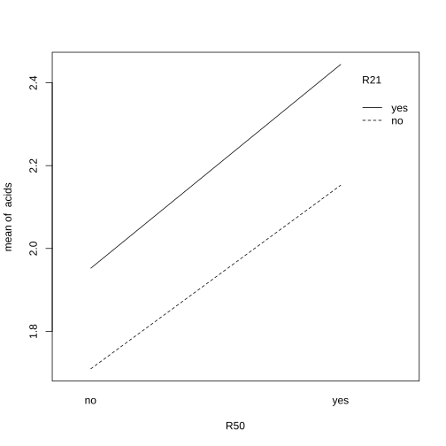
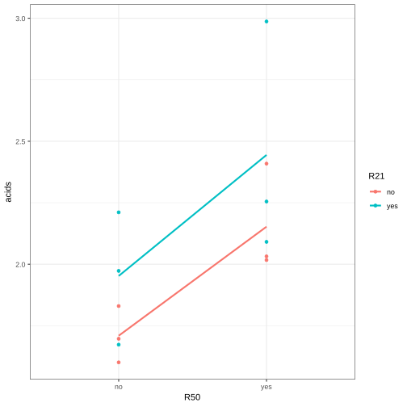
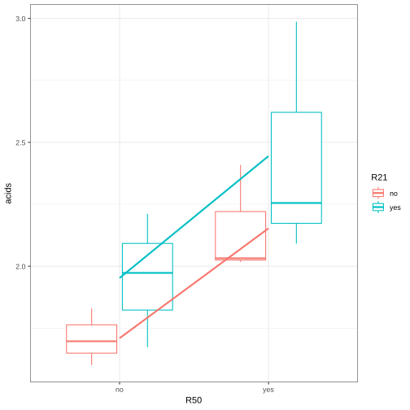

Factorial Treatment Structure
So far in the ANOVA series no special structure was assumed for the treatments but rather that each treatment corresponded to a single factor. This post starts to expand and relax the above assumption looking at the relation when a treatment is the result of various combination of individual factors. Think for instance of a plant being influenced both by light exposure and fertilizer.
In case of the above structure we talk about a factorial treatment structure and this one will be explored next.
Example and Terminology
If we see all possible combinations of the levels of two (or more) factors, we call them crossed.
## create dataset
acids <- c(1.697, 1.601, 1.830,
2.032, 2.017, 2.409,
2.211, 1.673, 1.973,
2.091, 2.255, 2.987)
R50 <- rep(c("no", "yes", "no", "yes"), each = 3)
R21 <- rep(c("no", "no", "yes", "yes"), each = 3)
cheddar <- data.frame(R50, R21, acids)
## In order to explore the strucutre and the combination of factors for each observation
## you can leverage the xtabs () function in R
xtabs (~ R50 + R21, data = cheddar)
Given the factorial structure questions arise of the individual effect of the single factor variables as well as the influence of the interplay.
An exploratory solution in lower dimension to answer the above questions might be to look a the interaction plot. This gives a visual idea of the interplay and effect of single variables.
with(cheddar, interaction.plot(x.factor = R50, trace.factor = R21, response = acids))
## standard way: interaction.plot(x.factor = cheddar$R50, trace.factor = cheddar$R21,
## response = cheddar$acids)
## Notice that the x-factor is the one being plotted on the x-axis
## while the trace factor acts as a dummy.

As the line are parallel you can infer that the the effect of R50 is independent of R21.
In order to display the single observations and look at the underlying noise and not simply drawing conclusion on averages you can leverage the ggplot2 package.
library (gglot2)
ggplot(cheddar, aes(x = R50, y = acids, color = R21)) + geom_point() +
stat_summary(fun.y = mean, geom = "line", aes(group = R21), size = 1) + theme_bw()

When data are to dense it might make sense to look at an aggregated picture such as a boxplot for the different underlying groups.
ggplot(cheddar, aes(x = R50, y = acids, color = R21)) + geom_boxplot() +
stat_summary(fun.y = mean, geom = "line", aes(group = R21), size = 1) + theme_bw()

Two-way ANOVA Model
Consider a set-up with two factors A and B, with respectively a and b number of levels. Assume a balanced dataset with the same number n of data for every combination \(a_i b_j \ \forall i = 1,...., a; j = 1,..., b\). Then you will have overall N = a * b * n of observations.
The two-way anova with interaction is then specified by:
where
- αi = main effect of factor A at level i
- βj = main effect of factor B at level j
- α βij = interaction effect.
- εijk = i.i.d. N (0, σ2) errors
Typically for the same arguments outlined in the previous post we have to choose side-constraints in order to pose restrictions for the added variables.
A typical choice consists in:
\begin{align*} \sum^a_{i=1} alpha_i &= 0\\ \sum^b_{j=1} \beta_j &= 0\\ \sum^a_{i=1} \alpha \beta_{ij} &= 0\\ \sum^b_{j=1} \alpha \beta_{ij} &= 0\\ \end{align*}It follows, that the main effects have α -1, β - 1 and (α -1) * (β - 1). Important is especially to understand the latter term. This is because each constraint of a variable is associated with the full spectrum of the other factor constraints.
Notice that as always the exact interpretation of the two-way anova with interaction terms depends on the choice of the applied constraints.
Given the above general framework it is possible to compare the effects of the factors and compare it to the model overall stochastic error to see if that is significant.
The average expected value from the two-way anova is:
\[ \bar{y}_{ij} = \hat{\mu} + \hat{\alpha_i} + \hat{\beta_j} + \hat{\alpha\beta_{ij}} \]
As in the case of the one-way ANOVA one can decompose the sum of squared errors as:
where,
- \(SS_A = \sum^{a}_{i=1} bn (\hat{a_i})^2\) and \(\hat{a_i} = \frac{1}{a}\sum^{b}_{j=1}\sum^{n}_{k=1} y_{ijk} - \frac{1}{nab}\sum^{n}_{k=1}\sum^{a}_{i=1}\sum^{b}_{j=1}y_{ijk}\)
- \(SS_B = \sum^{b}_{j=1} an (\hat{\beta_j})^2\) and \(\hat{\beta_i} = \frac{1}{b}\sum^{a}_{i=1}\sum^{n}_{k=1} y_{ijk} - \frac{1}{nab}\sum^{n}_{k=1}\sum^{a}_{i=1}\sum^{b}_{j=1}y_{ijk}\)
- \(SS_{AB} = \sum^{a}_{i=1}\sum^{b}_{j=1}n\hat{a_{ij}}^2\) and \(\hat{a_{ij}}^2 = (\frac{1}{ab}\sum^{b}_{j=1}\sum^{a}_{i=1} y_{ijk} + \frac{1}{nab}\sum^{n}_{k=1}\sum^{a}_{i=1}\sum^{b}_{j=1}y_{ijk} - \frac{1}{a}\sum^{b}_{j=1}\sum^{n}_{k=1} y_{ijk} - \frac{1}{b}\sum^{a}_{i=1}\sum^{n}_{k=1} y_{ijk})^2\)
- \(SS_E = (\sum^{n}_{k=1}\sum^{a}_{i=1}\sum^{b}_{j=1}y_{ijk} - \frac{1}{ab}\sum^{b}_{j=1}\sum^{a}_{i=1} y_{ijk})^2\)
- \(SS_T = (\sum^{n}_{k=1}\sum^{a}_{i=1}\sum^{b}_{j=1}y_{ijk} - \frac{1}{nab}\sum^{n}_{k=1}\sum^{a}_{i=1}\sum^{b}_{j=1}y_{ijk})^2\)
Notice that the above is the exact reason why the exam might be annoying. You have to train the decomposition of the variance with all of the indices and get familiar with a fast exposition of the latter.
From here on you can create the classical anova table. Being aware of the degrees of freedom.
Especially it holds:
- df factor A = (a -1)
- df factor B = (b -1)
- df interaction AB = (a -1) (b-1)
- df error = (nab - (a-1) [A factor] - (b-1) [B factor] - (a-1) (b-1) [interaction] - 1 [overall mean]) = ab (n-1)
Given the ANOVA table and the computed mean squared errors based on the sum of squares and degrees of freedom above it is possible to compare the single influence of each factor and the interaction term with the underlying stochastic noise.
The following tests result:
-
H0: \(\hat{a\beta_{ij}} = 0 \ \forall i,j\) vs. HA: \(\hat{a_{ij}} \neq 0\) for at least one i,j.
Under the Null:
\[ \frac{MS_{AB}}{MS_E} \mathtt{\sim} F_{(a-1) (b-1), ab (n-1)} \]
-
H0: \(\hat{a_{i}} = 0pp \ \forall i\) vs. HA: \(\hat{a_{i}} \neq 0\) for at least one i.
Under the Null:
\[ \frac{MS_{A}}{MS_E} \mathtt{\sim} F_{(a-1), ab (n-1)} \]
-
H0: \(\hat{\beta_{j}} = 0 \ \forall j\) vs. HA: \(\hat{\beta_{j}} \neq 0\) for at least one j.
Under the Null:
\[ \frac{MS_{B}}{MS_E} \mathtt{\sim} F_{(b-1), ab (n-1)} \]
Single Replicates
Notice that if you have a single observation for each level combination then, it is not possible anymore to make statistical inference with a model including an interaction term. The reason for that is being unable to disentangle the interaction term component from the stochastic error component εijk.
While, it is theoretically possible to fit a main effect model and estimate this accordingly, when the underlying data generating mechanism actually contains an interaction, we are fitting a wrong model. The consequence is that the corresponding tests will be too conservative as attributing a higher standard error, and therefore p-values will be too large. As the Type I error will therefore be under control you can choose such an approach at the expense of a low power and an increased Type II error.
Quite often however, it is possible to apply transformations to the independent variables. This will transform the multiplicative nature of the interaction term to an additive scheme on the log-scale, which can then be accordingly estimated.
Unbalanced Data
So far, when looking at the two-way ANOVA model we have made the restrictive assumption of a balanced data design. Each level combination displayed the same amount of observation. This led to the beneficial conclusion that when changing the level of a single factor, the resulting change in the response variable was affected directly by the factor level change. In regression terminology this is called an orthogonal design.
Relaxing the assumption of a balanced dataset the analysis of variance becomes more complex. A shift in factor level does not influence the response variable just directly but rather also indirectly due to the inherit dataset imbalances.
Think about the following case for instance
running <- read.table("http://stat.ethz.ch/~meier/teaching/data/running.dat", header = TRUE)
str(running)
xtabs (~ gender + drink, data = running)
The data reports a sports experiment using a factorial design with factor gender and factor energy drink (having two levels). Response was running time in seconds for a specific track.
As it is possible to see above the data is unbalanced containing 50 female and 20 male participants.
It follows that when changing the level of the drink factor for analyzing the effect of the drink component you automatically change the underlying structure of factor gender due to the unbalanced dataset.
The result is a intricate relation among the different factors and the end result that a decomposition of the sum of squared errors in the single components as in the previous section is not possible.
In order to approach an unbalanced data scheme an alternative model comparison design is needed. In this sense the concept of reduction of residual sum of squares is introduced.
The reduction of residuals sum of squares states how much the introduction of the factor reduces the sum of squares in comparison to a smaller restricted model.
In order to see that consider again a one-way ANOVA model with
\[ SS_T = SS_Trt + SS_E \]
where
\begin{align*} SS_T &= \sum^{m}_{i=1} \sum^{n_i}_{j=1} (y_{ij} - \frac{1}{N}\sum^{m}_{i=1} \sum^{n_i}_{j=1} y_{ij})^2 \\ SS_Trt &= \sum^{m}_{i=1} \sum^{n_i}_{j=1} (\frac{1}{n_i} \sum^{n_i}_{j=1} y_{ij} - \frac{1}{N}\sum^{m}_{i=1} \sum^{n_i}_{j=1} y_{ij} ) \\ SS_E &= \sum^{m}_{i=1} \sum^{n_i}_{j=1} (y_{ij} - \frac{1}{n_i} \sum{n_i}_{j=1} y_{ij}) \\ \end{align*}There the SSTrt represented the reduction of the sum of squares (i.e. the error amount captured by the treatment specific mean effects) in comparison to the overall mean model. A similar interpretation is possible for the reduction of residual sum of squares for the unbalanced case.
It follows then that in an unbalanced test setting with multiple
factors you can answer questions as: "Do we need factor B in the
model if we already have factor B?"
By sequentially building up a model and looking at the corresponding reduction of residuals sum of squares.
Notation:
We denote the residual sum of squares for factor B given factor A and an overall constant μ as:
SS (B | 1, A).This consists therefore in the reduction in the sum of squares between
y ~ A + Bandy ~ A.The sequential nature follows automatically from the definition above as we need the restricted model to compute the reduction in the squared errors.
There are now different ways to or types of model comparison approaches yielding different results. The choice of the model is highly debated in the academic literature and is still an open issue.
- Model Comparison I: Sequentially building up a model by computing
SS (A|1) SS (B|1, A) SS (AB|1, A, B)
- Model Comparison III: Control for all other terms
SS (A|1, B, AB) SS (B|1, A, AB) SS (AB|1, A, B)
- Model Comparison II: Control the influence of the largest hierarchical model not including the term of interest. This consists essentially in model III dropping the terms that are hierarchically lower than the factor for which the reduction in residual sum of squares is being computed.
SS (A|1, B) SS (B|1, A) SS (AB|1, A, B)
Some technical details are omitted here at the bottom. Very generically stated both in the script and in the slides and it is not worth the effort of mentioning them here. Have a look at them when preparing for the exam.